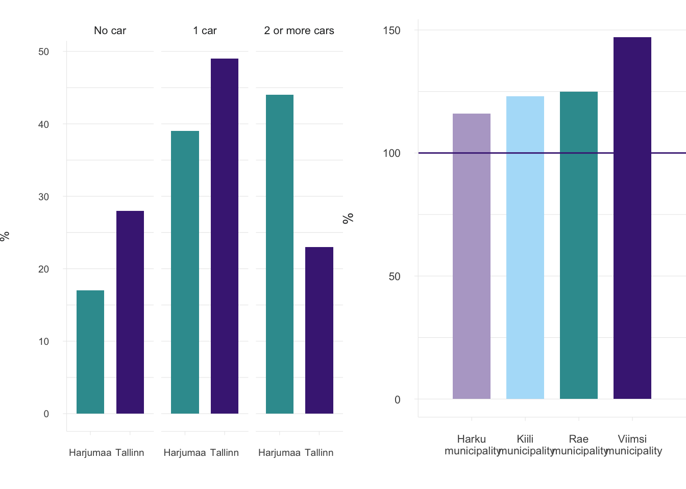
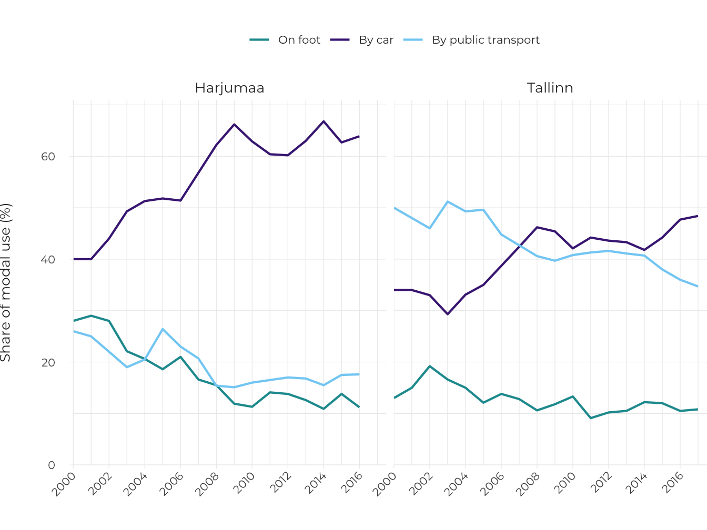
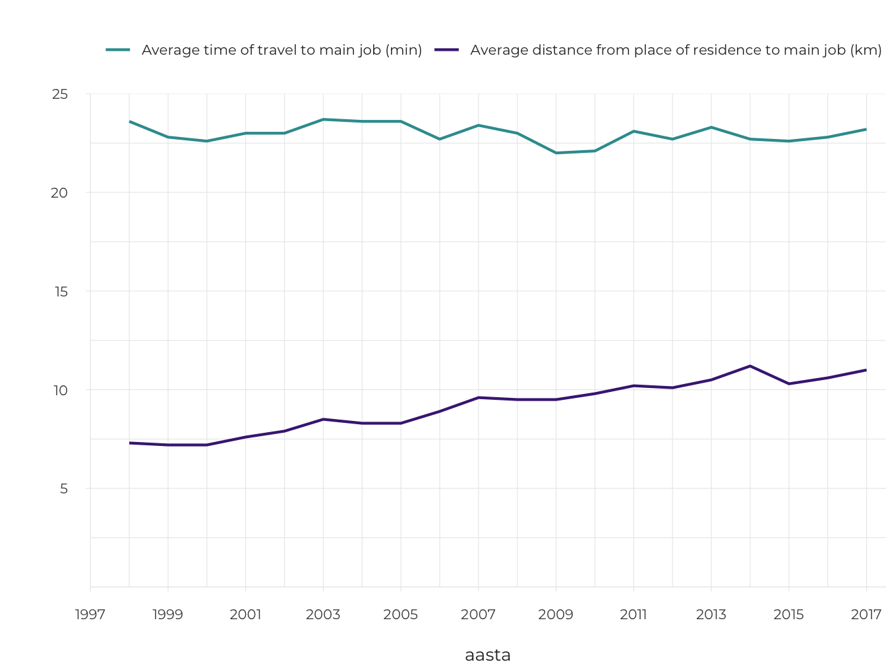

1.5 Accessibility changes in motorised Estonia
- While motorisation reduces people’s travel options in Estonia’s larger urban regions, a private car ensures access to services in remote areas.
Motorisation is the increase in the frequency of owning and using motor vehicles, and the spread of motor culture in a broader sense.
The first car was driven on Estonian roads in 1896; currently, there are over 740,000 cars in Estonia (Statistics Estonia 2018). Cars are a commodity owned by over half of the country’s inhabitants. On the one hand, using cars has improved the travel options of many people and considerably reduced the perceived distances. On the other hand, the powerful increase in the number of cars has changed the public space in towns as well as elsewhere in Estonia. Motorisation is the increase in the frequency of owning and using motor vehicles, and the spread of motor culture in a broader sense. In sparsely populated rural areas where public transport is insufficient, private cars have become indispensable. In Estonia’s urban regions, the pace in the growth of the number of cars is gradually coming to a halt and there is increasing interest in ideas for planning street space favouring various users. This article discusses motorisation in its two roles: as a facilitator and an inhibitor of access. The aim of the article is to give an overview of how motorisation and the direction of car-based mobility influence access to public services and public space in general for the Estonian population. The article also discusses the strategies for sustainable mobility in.
Mobility is a person’s ability to move from one place to another to meet their daily needs, using one or several modes of transport or transport services.
Mobility is a person’s ability to move from one place to another to meet their daily needs, using one or several modes of transport or transport services. As opposed to traffic planning, which deals with the movement and access of vehicles, mobility planning focuses on the movement of people and goods regardless of the mode of transport. Sustainable mobility means the development of environmentally friendly and sustainable transport for moving people around.
The rapid motorisation of the 1990s is stabilising
Rapid motorisation in Estonia is similar to that occurring in other Eastern Bloc countries. After World War II, the levels of motorisation measured as the number of cars per 1,000 inhabitants did not differ significantly in Eastern and Western Europe. Just a decade later, the difference was huge. By the early 1990s, motorisation was near a historical peak or had considerably slowed in European Union countries as well as the US, while compensation for the lag that had occurred in Eastern Bloc countries in the previous decades was only beginning. For example, West Germany reached its current level of motorisation in the 1980s, but East Germany reached the same level by the 2000s after German reunification (Pucher ja Buehler 2005). In Estonia, the limited availability of private cars during the Soviet period was replaced by an enthusiasm for car ownership in the 1990s. Since then, Estonia has gradually caught up with the level of car use in Western European countries (Figure 1.5.1). Although motorisation continued in Western Europe, the pace of motorisation has been slower there. In terms of the number of registered cars per 1,000 inhabitants, Estonia is currently behind only the most motorised countries of the EU, such as Italy, Luxembourg, Malta and Finland, but has surpassed most of the Western European EU member states.
Figure 1.5.1. Change in motorisation in Western (EU 15) and Eastern European countries (countries that have joined the EU since 2004, except Cyprus and Malta)
## Warning: Ignoring unknown aesthetics: textSource: Eurostat 2019.
Therefore, the rapid motorisation of Eastern Europe, including Estonia, in the 1990s and 2000s, can be regarded as compensation for the difference caused by political systems. Considering historical motorisation trends (e.g. in the United States), the pace of motorisation will come to a halt sooner or later. The reasons vary, but the bottom line is that everyone who ever wanted to own a car will have acquired one, while every new car user has experienced difficulties with parking space and traffic jams due to the large number of cars. Therefore, the rapid pace of motorisation in previous periods cannot serve as the basis for future predictions and decisions, such as road construction planning.
Motorisation affects the environment, people’s health, mobility and access to services
Motorisation has an environmental impact in terms of energy and land use; it also changes social life and the economic functioning of societies. According to 2017 data from the International Energy Agency, half of the world’s oil output is used for urban and road transport, and the transport sector accounts for over one-quarter of global carbon dioxide emissions. Further to fuel consumption, the environmental impact of motorisation comes from the manufacture and use of cars, traffic hazards, as well as the use of the urban space. As people exercise less when moving around by car, the negative impact of motorisation is also expressed in health conditions, such as obesity and cardiovascular diseases (Bassett jt 2008). In addition to noise, vibration and pollution via airborne particulate matter in heavy-traffic streets, fewer opportunities for socialising presents another problem for people. Due to motorisation, city streets become ‘traffic pipes’ for cars, which reduce the possibilities available to all other participants in the traffic. The quality of streets as public space has therefore deteriorated.
Accessibility means the opportunities for people to participate in usual social activities
As streets have often become ‘traffic pipes’, motorisation in cities is beginning to hamper general accessibility. Accessibility means the opportunities for people to participate in usual social activities (Farrington 2007). In addition to the freedom of movement, accessibility covers delivering or planning services and jobs closer to people in order to reduce the need to travel (Figure 1.5.2). Examples of this are the digitalisation of social services and the creation of digital workplaces. Although public services are quite easily accessible online in Estonia without leaving home, social life, the education of children, hobbies and entertainment still require visiting larger towns or city centres. Reducing accessibility to only cover the needs of car users is one-sided, as it reduces travel options and quality for other groups of traffic participants, including pedestrians, cyclists, seniors and people with special needs. For transport planning to take into account a variety of circumstances, an understanding of the role and use of cars in various environments is required: in low-density areas, rural areas, urban regions, and within settlements.
Figure 1.5.2. Elements of accessibility
Source: Discovering Urbanism 2010.
A sustainable urban mobility plan
The purpose of a sustainable mobility plan is to create a sustainable transport system. This means meeting people’s current and future mobility needs using modes of mobility that do not damage the human environment (LiLiA 2017). Such an organisation of mobility requires a convenient public transport network, seamless switching between modes of mobility, development of active modes of mobility (e.g. cycling and walking) and a reduction of the need for cars. The European Commission adopted an action plan on urban mobility in 2009 and supports its implementation at the level of EU member states through the creation of cooperation and knowledge networks, data gathering and financial investments (Eltis 2019).
Life in low-density areas is car-centred
Surveys by the Estonian Road Administration on satisfaction with public transport show that people’s satisfaction with the quality and accessibility of public transport within counties has decreased. Arrival times, routes and connections between routes are the greatest sources of dissatisfaction. Even if the locations of stops and limited departures a day make public transport accessible to a large part of the population (Figure 1.5.3), this does not mean that it can actually compete with car transport in terms of travel time and the number of connections. According to the 2014 survey ‘Satisfaction of inhabitants with local public services’ by Saar Poll, satisfaction with and competitiveness of public transport are higher in towns than in lower-density areas; that is, peri-urban areas and remote areas far from urban centres. In low-density areas, especially in areas of low demand, public transport departures are infrequent and it is difficult for people to time their movements, especially if journeys have to be combined.
Figure 1.5.3. Access to public transport in Estonia (assessed by the nearness of stops and frequency of departures)
## Reading layer `EKSPORT_3301-N0RqvBQsFGT19Q0M-t7' from data source `/Users/taavet/Documents/GitHub/EIA_2019/data/15_fig3_data/EKSPORT_3301-N0RqvBQsFGT19Q0M-t7.shp' using driver `ESRI Shapefile'
## Simple feature collection with 4708 features and 7 fields
## geometry type: MULTIPOLYGON
## dimension: XY
## bbox: xmin: 369548.3 ymin: 6377141 xmax: 739152.8 ymax: 6617849
## projected CRS: Estonian Coordinate System of 1997## VID KOOD NIMI VAARTUS STAMP_CRE JUHUSLIK GEOKODEER8
## 1 57447852 6536 Põlva linn 21 2020-01-17 0 0
## 2 57447464 8927 Valgesoo küla 76 2020-01-17 0 0
## 3 57444189 1846 Himmaste küla 88 2020-01-17 0 0
## 4 57444228 1609 Eoste küla 87 2020-01-17 0 0
## 5 57446917 7660 Soesaare küla 35 2020-01-17 0 0
## 6 57446719 1081 Adiste küla 49 2020-01-17 0 0
## geometry
## 1 MULTIPOLYGON (((679497.7 64...
## 2 MULTIPOLYGON (((679996.2 64...
## 3 MULTIPOLYGON (((680735.3 64...
## 4 MULTIPOLYGON (((681220.3 64...
## 5 MULTIPOLYGON (((681971.1 64...
## 6 MULTIPOLYGON (((684009.3 64...## Reading layer `Tee' from data source `/Users/taavet/Documents/GitHub/EIA_2019/data/15_fig3_data/Tee.shp' using driver `ESRI Shapefile'
## Simple feature collection with 6092 features and 3 fields
## geometry type: LINESTRING
## dimension: XY
## bbox: xmin: 377167.4 ymin: 6381180 xmax: 738908.5 ymax: 6614256
## projected CRS: Estonian Coordinate System of 1997## NIMETUS TEE_NR TYYP
## 1 Mõniste - Ape 68 Tugimaantee
## 2 Mõniste - Ape 68 Tugimaantee
## 3 Mehka - Vastse-Roosa 25198 Kõrvalmaantee
## 4 Mõniste - Tiitsa - Karisöödi 25199 Kõrvalmaantee
## 5 Mõniste - Tiitsa - Karisöödi 25199 Kõrvalmaantee
## 6 Mehka - Vastse-Roosa 25198 Kõrvalmaantee
## geometry
## 1 LINESTRING (659609.2 638215...
## 2 LINESTRING (659217.9 638423...
## 3 LINESTRING (653878.7 638465...
## 4 LINESTRING (654215.3 638118...
## 5 LINESTRING (651182.3 638504...
## 6 LINESTRING (651198.5 638520...Source: Statistics Estonia 2018, Nõmm 2018.
Intensifying car traffic reduces the number of travellers using public transport and this makes good services more expensive and difficult to provide in low-density areas. The decreasing quality and frequency of public transport in turn favours motorisation. According to the Estonian Road Administration, the number of passengers on county routes nearly halved in 2003–2016; the decrease was especially rapid in 2003–2009 (Figure 1.5.4). These years were a period of rapid increase in wealth and motorisation that led to a shift in modes of mobility in favour of cars. The number of users of public transport has decreased even though the mileage of public transport vehicles has not decreased during the same period.
Figure 1.5.4. Changes in number of passengers and distance travelled on county routes in Estonia, 2003–2016
## Warning: Ignoring unknown aesthetics: text
Source: Estonian Road Administration.
A mobility survey in Saaremaa for organising demand-based transport
Demand-responsive transport has the potential of offering more flexible and cost-effective solutions in low-density areas. A pilot project carried out in Saaremaa in 2018 by the Centre for Applied Anthropology of Estonia explored how people perceived their travel options and what mobility strategies work in low-density areas. The project revealed that in low-density areas, mobility poses an issue mainly for domestic parents of young children, seniors with reduced mobility, people working shifts in another village or in Kuressaare, and for children and young people attending extracurricular activities in towns. The idea of demand-responsive transport was received with reservations in Saaremaa. People currently prefer to get a ride home in a friend’s car rather than take a bus, even if the car journey involves additional stops and detours. People have created and use Facebook travel groups to share rides. Therefore, elements of demand-responsive transport and ride-sharing are already present in the daily practice of local people. More organised and professional ride-sharing developments that offer better travel options in low-density areas certainly deserve more attention by transport planners in the future.
Suburbs are more car-centred than urban centres
Intensifying car traffic reduces the number of travellers using public transport and this makes good services more expensive and difficult to provide in low-density areas.
Urban sprawl has occurred in Estonia’s largest urban regions over the past two decades: new residential, commercial, service and production areas have been established outside densely populated areas, but as the new areas lack integrated planning, the inhabitants commute between the city centre and suburban residential districts, often using private cars. Over the past 20 years, the population has increased considerably in Tallinn’s immediate surroundings (Figure 1.5.5), ent Harjumaa kaugemates omavalitsustes on toimunud mõõdukas langus 10–20%. Statistikaameti 2011. aasta rahvaloenduse pendelrände andmete järgi on Eestis kokku 28 üle 5000 elanikuga keskuslinna ümber koondunud toimepiirkonda. Kui paljud neist keskustest on väikesed, eriti just Lõuna-Eestis, siis üks – Tallinn – avaldab mõju inimeste liikumisele üle Eesti.
Figure 1.5.5. Number of cars per household in Tallinn (2016) and Harjumaa (2017) and population increase in Tallinn’s immediate surroundings over the past 20 years. Population in 1998 = 100%
## Warning in read.table(file = file, header = header, sep = sep, quote = quote, :
## incomplete final line found by readTableHeader on '../data/15_fig5_data2.csv'
Source: Kantar Emor 2018; Statistics Estonia 1998, 2018.
As in low-density rural areas, life without a car is also complicated in peri-urban areas. In areas just outside Tallinn in Harjumaa, an average of eight households out of ten have a private car, while nearly half of the households have two or more cars (Figure 1.5.5). A mobility study of Tallinn’s direct surroundings conducted by Kantar Emor in 2018 for the Estonian Road Administration shows that the inhabitants of Harjumaa use a car for nearly two out of three trips, while Tallinn residents only make about half of all trips by car. According to TNS Emor 2015 data, people living in urban centres use cars less than those living in the suburbs. An opposite trend is apparent in the use of public transport. The percentage of public transport users is higher in Tallinn than in the city’s hinterland. There are also differences within the hinterland. In the Lääne-Harju rural municipality, which includes the town of Keila with a good electric rail connection with Tallinn, people use the train for 16% of their trips. On the other hand, in the Saku rural municipality, which has a rail connection but the train service is less frequent and connections with Tallinn are poorer, only 1% of all trips to the capital city are taken by train.
Going to work on foot or by public transport has decreased since the late 1990s, while driving to work by car has doubled
Commuting trends over the past decade show that using cars has become more popular in Tallinn as well as elsewhere in Harjumaa (Figure 1.5.6). The relative share of walking to work has decreased considerably in peri-urban areas, as jobs are increasingly located in Tallinn. The share of those who walk to work has remained unchanged within Tallinn. The share of using public transport has decreased from 50% to 35% in Tallinn and from 26% to 18% elsewhere in Harjumaa. The nationwide trend is similar: Going to work on foot or by public transport has decreased since the late 1990s, while driving to work by car has doubled (Figure 1.5.7).
Figure 1.5.6. Modes of travelling to work in Tallinn and the rest of Harjumaa, 2000–2017
## Warning: Ignoring unknown aesthetics: text## Warning: Removed 105 row(s) containing missing values (geom_path).
Source: Statistics Estonia.
Motorisation has been a nationwide trend. According to the Estonian Road Administration (2017) the mileage of cars has increased 16% in 2013–2017. While public transport remains competitive in regional centres, the people living in peri-urban and remote areas increasingly depend on cars. This means that efforts to reduce the use of cars at national and municipal levels have not been sufficient.
Figure 1.5.7. Main mode of travelling to work, duration of journey and distance to work for employed people in Estonia, 1997–2017
## Warning: Ignoring unknown aesthetics: text
## Warning: Ignoring unknown aesthetics: text
## Warning: Removed 2 row(s) containing missing values (geom_path).
Source: Statistics Estonia.
Not all journeys are made to go to work or for shopping. Nearly one-tenth of journeys by car are made to take children to school or kindergarten. In the peri-urban areas of Tallinn, 12% of people drive daily to give rides to others, within which women up to the age of 34 represent the largest group (Kantar Emor 2018). Tallinn therefore repeats the global experience that living outside a city means actively using a car, giving rides to children, and that mostly mothers fulfil this role (McCarthy jt 2017).
Good public transport connections and non-motorised traffic networks in the suburbs would help create an environment with a variety of uses, in which people would not have to travel to the city for every activity or service.
Although the growth of suburbs has been studied to a fair extent, the changing of the public space due to urban sprawl or the expansion of suburbs has not been discussed sufficiently. Some of the effects are as expected. For example, in car-dependent environments, those family members that do not drive a car themselves, especially children under 18, depend on the willingness, time and availability of their parents to transport them. Contacts between the various groups of society also become less frequent. Living in the suburbs and travelling by car considerably reduces socialisation on the street or encounters with strangers on public transport, which are so typical of an urban lifestyle. Even though suburban communities may have a community spirit and inner democracy, such a community consists of socially and economically similar people and their encounters with different types of people are scarce. Furthermore, surveys show that the daily travelling of urban residents leads to a lower environmental burden than that of peri-urban and rural inhabitants (Poom 2017). But it is the urban centres that suffer the most from the impact of motorisation, such as air pollution, noise, traffic jams and the use of the public space for parking.
In urban planning, it is essential to link the planning and management of mobility in the city centre to that in the suburbs. Good public transport connections and non-motorised traffic networks in the suburbs would help create an environment with a variety of uses, in which people would not have to travel to the city for every activity or service. Better access to services in the suburbs would improve the quality of the public space in both the suburbs and urban centres. In urban regions, better accessibility would increase participation in social life and lead to a more coherent society.
The development of mobility in urban centres is based on cars
Urban sprawl and the related motorisation influence the quality of the public space in urban centres as a facilitator of people-to-people contact and communication. If jobs and services disappeared from the city centre, suburban inhabitants would have no reason to go there any more. This in turn means that shops and cafés in the centre would lose business. New buildings in urban centres – usually standard-design grocery stores in small towns and office buildings in larger towns – tend to be too bulky for good public space. The quality of public space, including street space, has a considerable impact on people’s willingness, desire and opportunities to move around and be in the urban space. The quality of public space is not easily measured or quantified, while the time spent in cars and traffic jams inevitably reduces opportunities to meet and socialise in the street space.
The quality of public space, including street space, has a considerable impact on people’s willingness, desire and opportunities to move around and be in the urban space.
Mobility development in Estonia’s largest towns has so far been based on the expectation of continuing motorisation. Large road projects, such as Reidi Road, Haabersti roundabout and the planned Rävala connection in Tallinn, as well as the ring road through Tartu that is part of a national highway, illustrate the political willingness to improve the quality of car travel. While these very expensive road building projects are under way, insufficient attention is paid to ways of facilitating other modes of mobility that would be equally available to people with lower and higher incomes. Giant road structures disrupt the human-dimension of public space suitable for pedestrians, and therefore encourage even greater motorisation. In planning documents, the number of parking places is usually determined by standards without considering the location of the site or the proximity of public transport. Measures such as planning settlements near public transport routes or establishing and maintaining bicycle paths would facilitate a wide range of modes of mobility and thereby reduce the need for owning and using a private car. Cyclists and pedestrians are mentioned in the current urban, suburban and rural plans mostly in the context of safety. Preferential strategic planning of non-motorised traffic infrastructure as an alternative to car traffic is not a priority in any of the municipalities.
Not enough competitive and attractive alternatives to car traffic have been offered to cater for walking and cycling, even though the bicycle is one of the fastest modes of mobility during peak hour and for distances under 3 km (Figure 1.5.8). According to data on Tallinn (Tallinn arvudes 2018), it had 273 km of bicycle and pedestrian paths in 2017, of which nearly 90% were tracks for non-motorised traffic shared with pedestrians.
Figure 1.5.8. Comparison of the competitiveness of modes of mobility in terms of time
Joonis 1.5.8. Liikumisviiside ajalise konkurentsivõime võrdlus
## Warning: Removed 3 row(s) containing missing values (geom_path).
Source: Tallinn Bicycle Strategy 2018–2027.
The coverage of bicycle paths is more than two times lower in Tallinn compared to the capital cities (Helsinki, Stockholm) of Estonia’s neighbouring countries (Otsus 2016). For example, in the centre of Tallinn, the bicycle path network is fragmented and has poor connections to the railway and bus stations. Bicycles could be used much more in our climate zone throughout the year: according to Statistics Estonia, only 1.6% of the inhabitants of Tallinn used a bicycle to go to work in 2017, while in the neighbouring capitals of similar climate such as Helsinki and Stockholm, 11% and 9% respectively of all trips were made by bicycle (ECF 2013). This is explained by the general practice of developing travel options in Estonia, which has not valued the creation of space for bicycles so far.
In smaller towns, car traffic is lighter, while the lack of footpaths and of contemporary public space in general is a more acute problem. This is especially evident in settlements divided by major highways, such as Rõngu or Adavere. However, a number of smaller municipalities have understood the importance of human-friendly space and good accessibility, especially for the younger population; they have built bicycle and pedestrian paths and bicycle parking facilities and developed central squares. Where local public transport is minimal or absent and distances are short, these settlements have great potential for convenient non-motorised traffic.
Future trends: enabling various modes of mobility in suitable volumes will reduce the use of cars
Young people in many Western European countries such as the United Kingdom are increasingly giving up car ownership. The reasons behind this trend are the reduced subsidies for work-related travel, higher expenses of owning a private car, and improved public transport (Le Vine ja Jones 2012). Changes that will reduce the use of cars are also appearing in Estonia. For example, several mobile applications have been developed for rental and ride-sharing services in urban regions that reduce the need to own a car. The change in modes of mobility is also driven by the development of home delivery services for goods and food, and of mail orders for goods. By offering convenience through alternative solutions, such trends make it easier to not own a car.
Cyclists and pedestrians are mentioned in the current urban, suburban and rural plans mostly in the context of safety.
Sustainable mobility requires human-centred planning that focuses on the quality of life and accessibility. Therefore, measures that combine the direction of land use, offer convenient alternatives to car users, establish the infrastructure needed for that, and shape awareness and attitudes would need to be chosen. The needs and challenges vary somewhat depending on the particular region. For families living in rural areas, participating in the usual activities in society means almost always driving by car. At the same time, transport on demand and community ride-sharing services offer new alternatives to owning a private car and also to a deficient public transport system. For example, in the Saaremaa municipality, a pilot project is planned for on-demand and social transport solutions, in which people can provide information about the dates and times of their travel, which can form the basis on which timetables are prepared. Such models have been tested for short periods in Lääne-Virumaa and Setomaa. Sustainable mobility planning also requires multimodality: cars will still be necessary for some journeys, but it is important that there are also sufficient non-motorised modes of transport for the necessary trips. Further opportunities lie in innovative usage models that, instead of the costs of owning a car, offer packages for a monthly fee that allow the use of a certain means of transport. Mobility-as-a-Service is already being taken up in several countries, with Finland as one of the leaders in the field.
Sustainable mobility requires human-centred planning that focuses on the quality of life and accessibility.
The functioning of easily accessible urban regions requires a preference for multipurpose land use. In such an arrangement, places of residence, work and spending leisure time are in close proximity, while urban encroachment is directed toward areas with good public transport connections. A private car need not be the fastest means of travelling between places; a ‘reasonable level of congestion’ or ‘reasonable travel time’ is a better unit for transport planning than minimising car travel time by a few minutes (Banister 2008). Combining modes of mobility in urban centres and suburbs would maintain the advantages of living in a low-density area while facilitating the use of public transport instead of cars. For example, public transport can be connected to bicycle path networks by building not only car parks, but also bicycle parks near railway stations and bus stops. Tallinn peri-urban areas already have more bicycle traffic than the high-density city. Sustainable and mobility-promoting solutions will be easier to achieve if the various development plans, strategies and mobility plans are coordinated so that the development of settlement and mobility are approached as an integral whole. Despite a few positive examples, such as the mobility plan for the Tallinn urban region that is currently being prepared, local governments have cooperated very little so far.
Combining modes of mobility in urban centres and suburbs would maintain the advantages of living in a low-density area while facilitating the use of public transport instead of cars.
Sustainable planning in an urban environment requires also paying attention to those members of society that have no opportunity to use a car. In an ageing society, it is important that all groups of society can access good public space and services. An urban centre can counter the impacts of urban sprawl if it is planned for pedestrians; that is, has convenient footpaths, safe and convenient pedestrian crossings, and a pleasant street front supporting social activities. By developing an inclusive physical urban space, we ultimately favour all groups in society.
It is true that the car enables mobility in certain situations and certainly for some senior citizens and people with mobility difficulties. Motorisation has also helped to bring the various Estonian regions closer to each other and made it possible to live in remote areas of the country. However, excessive dependence on cars is detrimental to the functioning of society. It makes accessibility a privilege only enjoyed by part of society, thus reducing social contact. Ensuring accessibility and good public space across Estonia requires specific intervention into the design of urban public space as well as offering creative solutions for low-density areas.
Acknowledgements
The work of Tauri Tuvikene on this publication was supported by the project ‘Public transport as public space in European cities: Narrating, experiencing, contesting (PUTSPACE)’; financial support was provided by the HERA Joint Research Programme (www.heranet.info), which is co-funded by AKA, BMBF via DLR-PT, ETAg, and the European Commission through Horizon 2020.
References
Banister, D. 2008. The sustainable mobility paradigm – Transport Policy, 15 (2), 73–80.
Bassett, D. R., Pucher, J., Buehler, R., Thompson, D. L., Crouter., S. E. 2008. Walking, cycling, and obesity rates in Europe, North America, and Australia – Journal of Physical Activity and Health, 5 (6), 795–814.
Discovering Urbanism 2010. From a mobility to an accessibility orientation. http://discoveringurbanism.blogspot.com/2010/02/from-mobility-to-accessibility.html.
ECF – European Cyclist Federations 2013. The benefits of cycling: unlocking their potential for Europe. https://ecf.com/resources/cycling-facts-and-figures.
Eltis – The Urban Mobility Observatory 2019. The Sustainable Urban Mobility Plan concept and guidelines. https://www.eltis.org/mobility-plans/sump-concept.
Farrington, J. H. 2007. The new narrative of accessibility: its potential contribution to discourses in (transport) geography. – Journal of Transport Geography, 15 (5), 319–30.
Jüssi, M., Kalvo, R., Rannala, M., Savi, T. 2017. Tallinna rattastrateegia 2018–2027. Tallinn: Tallinna Kommunaalamet.
Kantar Emor 2018. Tallinna lähipiirkonna – Harjumaa (v.a Tallinna linn) ning Kohila ja Rapla valdade elanike liikumisviiside uuring. Tallinn: Maanteeamet.
Le Vine, S., Jones, P. 2012. On the Move: Making Sense of Car and Train Travel Trends in Britain. London: The Royal Automobile Club Foundation for Motoring Ltd.
LiLiA – Tallinna piirkonna säästva linnaliikuvuse arengukava 2017. Tallinna LiLia 2035. Kontseptsioon. https://www.mnt.ee/sites/default/files/content-editors/Failid/Yldine/talilia_kontseptsioon_juuni2017.pdf.
Estonian Road Administration 2017. Autopargi läbisõit 2017. https://www.mnt.ee/sites/default/files/survey/labisoit_2017.pdf.
McCarthy, L., Delbosc, A., Currie, G., Molloy, A. 2017. Factors influencing travel mode choice among families with young children (aged 0–4): a review of the literature – Transport Reviews, 37 (6), 767–781.
Nõmm, T. 2018. Kolmel inimesel neljast on ühistransport hästi kättesaadav nii linnas kui ka maal. https://blog.stat.ee/tag/uhistransport.
Otsus, E. 2016. Tallinna jalgrattateede sidusus. BA thesis. University of Tartu.
Poom, A. 2017. Spatial Aspects of the Environmental Load of Consumption and Mobility. PhD thesis. Tartu: University of Tartu Press.
Pucher, J., Buehler, R. 2005. Transport policies in Central and Eastern Europe. – Button, K. J., Hensher, D. A. (eds.). Transport Strategy, Policy, and Institutions. Oxford: Elsevier Press, 725–744.
Centre for Applied Anthropology 2018. Liikuvusuuring Saaremaal nõudluspõhise transpordi korraldamiseks. http://www.antropoloogia.ee/uuringud.
TNS Emor 2015. Liikumisviiside uuring elektrisõidukite lühirendi ja säästva transpordi kasutamise arendamiseks Tallinnas. Tallinn: Majandus- ja Kommunikatsiooniministeerium, KredEx.